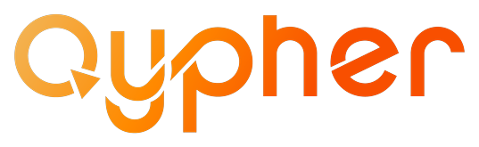
Formación en Inteligencia Artificial · Grupo BiosFundamentos, niveles de agencia, patrones de diseño y Function Calling.
Stack del programa: Python · LangChain · N8N
Agente vs. LLM puro y la metáfora del cerebro con brazos.
Percepción, razonamiento, planificación y acción.
Modelo, herramientas y memoria del agente.
De procesador simple a sistema multiagente.
ReAct, Plan-and-Execute y Router.
Cómo el LLM ejecuta herramientas, en detalle.
Arquitecturas: red, supervisor, jerárquica…
Tu primer agente ReAct con LangChain.
Es una forma avanzada de IA enfocada en la toma de decisiones y la acción autónomas.
A diferencia de un modelo de lenguaje —que solo predice el siguiente token más probable— un agente puede decidir y actuar sobre su entorno.
Recibe la petición del usuario y él mismo decide qué herramienta usar, sin que se le indique.
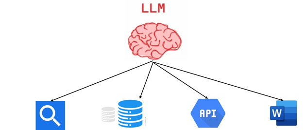
Recopila información del entorno: texto, imágenes, sensores, bases de datos, interfaces.
Con el LLM analiza el contexto, identifica lo relevante y formula soluciones.
Fija objetivos, los divide en pasos y descubre la mejor forma de alcanzarlos.
Ejecuta tareas, toma decisiones e interactúa con otros sistemas.
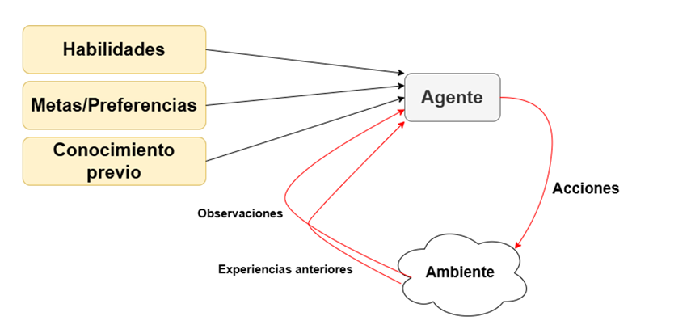
El agente percibe el ambiente, razona y ejecuta acciones que lo modifican.
El LLM es el “cerebro”: entiende, razona y decide. Es la base sobre la que se construye toda la capacidad del agente.
Funciones o recursos externos para interactuar con el entorno: APIs, bases de datos, búsqueda, archivos. Amplían lo que el agente puede hacer.
Permite mantener contexto, aprender de la experiencia y mejorar con el tiempo recordando interacciones previas.
Para las interacciones inmediatas y el contexto de la conversación actual.
Datos y conversaciones históricas que persisten entre sesiones.
Registro de interacciones pasadas concretas de las que aprender.
Información compartida entre agentes en un sistema multiagente.
Con memoria, el agente adapta su comportamiento a situaciones nuevas en lugar de empezar de cero cada vez.
No hay una respuesta única y consensuada.
En vez de preguntar “¿es o no es un agente?”, la pregunta útil es:
¿Qué tan agéntico es el sistema?
Lo determina el nivel de autonomía y control que el sistema tiene sobre sí mismo.
A mayor capacidad de decidir, iterar y actuar sin intervención, más agéntico es.
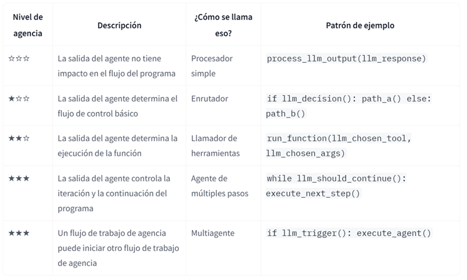
A más estrellas, mayor impacto de la salida del LLM sobre el flujo del programa.
La salida del LLM no afecta el flujo. Ej.: un traductor automático — siempre transforma input en output. Agencialidad casi nula.
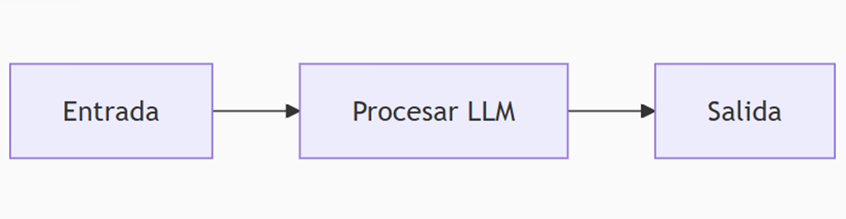
El LLM decide entre caminos predefinidos. Ej.: clasificar una consulta como técnica (ruta A) o comercial (ruta B). Como un semáforo.
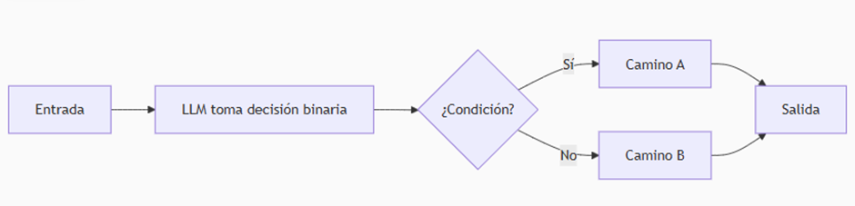
Decide en tiempo real si necesita una herramienta externa y la invoca con los parámetros correctos. Es el “cerebro con brazos”.
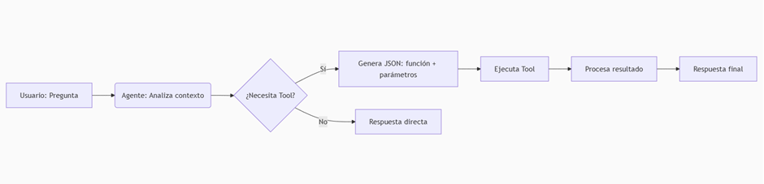
Entra en un ciclo iterativo: piensa una acción, la ejecuta, guarda resultados en memoria y decide si continúa. Planea, actúa y aprende.
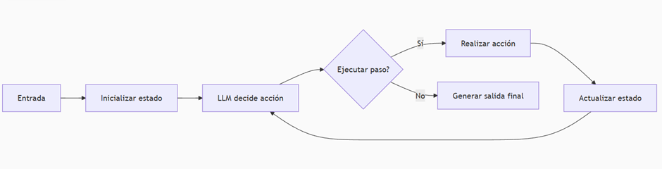
Un agente supervisor recibe la tarea y, si necesita expertos, delega en sub-agentes especializados: uno busca vuelos, otro hoteles, otro itinerarios…
Coordina las respuestas y sintetiza el resultado final. Máxima autonomía: un director de orquesta.
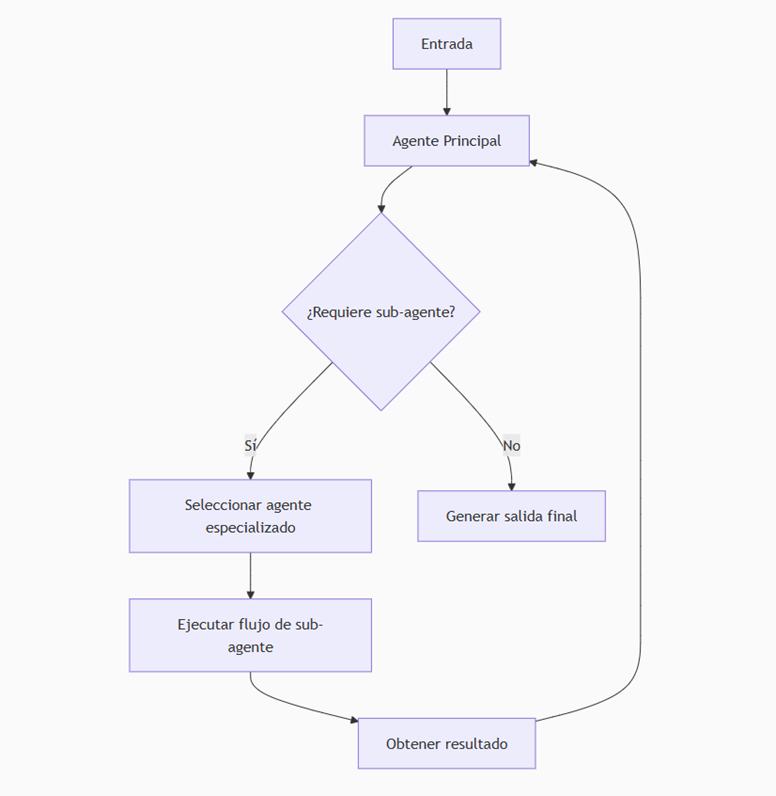
El LLM alterna razonamiento y acción en un bucle hasta resolver la tarea:
Ventaja: se puede trazar su razonamiento → agentes auditables y que se adaptan al vuelo. Es el default para agentes simples.
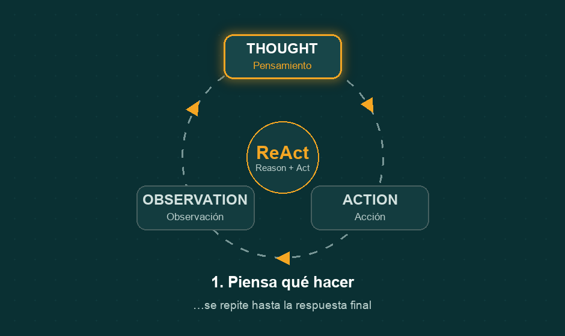
Un LLM genera por adelantado un plan de varios pasos para toda la tarea.
Ejecuta cada paso del plan (a menudo con modelos más pequeños), invocando herramientas. Re-planifica si hace falta.
| ReAct | Plan & Execute | |
|---|---|---|
| Planeación | Un paso a la vez | Todo el plan primero |
| Ideal para | Entornos inciertos, adaptación al vuelo | Flujos largos y estructurados |
| Riesgo | Visión “cortoplacista” | Menos flexible si cambia el entorno |
| Costo | Más llamadas al modelo grande | Más económico (modelos pequeños por paso) |
ReAct = default para lo simple. Plan-and-Execute brilla en tareas complejas con dependencias entre pasos.
El LLM actúa como enrutador inteligente: clasifica la petición y la dirige al camino o especialista adecuado.
Ej.: “¿Cómo configuro mi email?” → ruta soporte técnico.
Los LLM solo generan texto: no corren código, ni llaman APIs, ni consultan bases de datos. Para eso existe el Function Calling.
Es la capacidad del LLM de identificar cuándo necesita una acción externa y generar una llamada estructurada (normalmente JSON) indicando qué función usar y con qué argumentos.
Clima, divisas, RAG, APIs y bases de conocimiento.
Enviar formularios, actualizar estado, coordinar flujos.
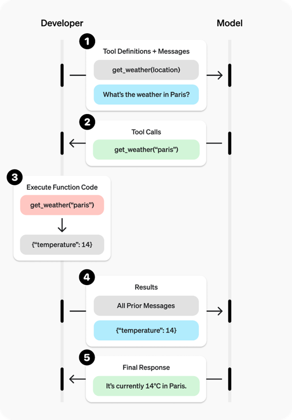
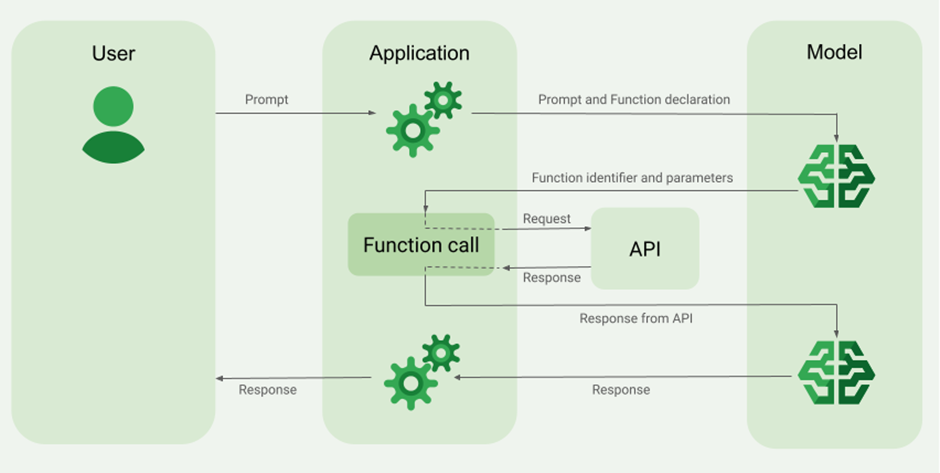
El usuario pregunta: “¿Qué clima hace en París?”
El modelo identifica que debe usar la herramienta get_weather y produce esta salida estructurada:
El sistema entiende que debe llamar a get_weather con "Paris, France". Ejecuta, obtiene el resultado, lo devuelve al modelo y este redacta la respuesta final.
[{
"type": "function_call",
"id": "fc_12345xyz",
"call_id": "call_12345xyz",
"name": "get_weather",
"arguments": "{\"location\":\"Paris, France\"}"
}]La tool get_weather debe existir y estar previamente configurada en el agente.
Cuando un solo agente crece, aparecen problemas: demasiadas herramientas, contexto inabarcable, necesidad de especialidades distintas.
Más fácil de desarrollar, probar y mantener.
Agentes expertos por dominio → mejor rendimiento.
Defines explícitamente cómo se comunican.
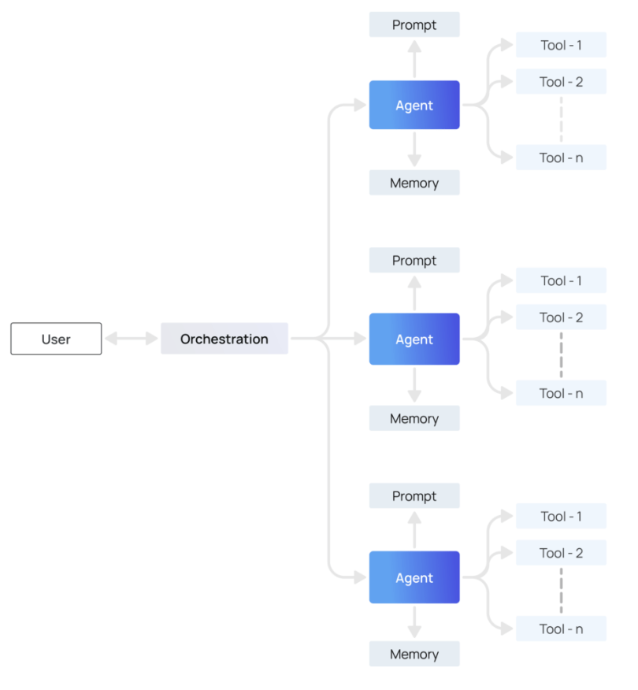
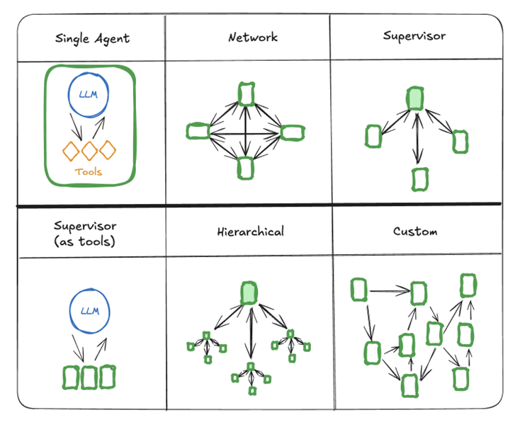